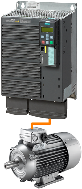

'Cam740' may be used for diagnosis of Sinumerik 840D, Sinamics or Simatic S7 systems connected via Ethernet, Profibus, MPI or any other interface supported by Siemens S7 systems.
Offline functions, without a connection to a live PLC system:
- Sinumerik alarm bit calculator: DB2 bit for a specific alarm number or alarm number for a specific bit in DB2
- Sinumerik M function calculator: Channel DB bit for quick decoding of an M function
- Sinumerik Fast IO calculator: DB10 bits for monitoring or control of a specific NCK fast input
- Sinamics Help for Alarms: Display the help for a Sinamics specific alarm number
Online functions, when the program is connected to a live PLC system:
- Sinumerik axis / channel diagnosis: a live screen with the status of some of the most important enable signals for axis / channel diagnosis
- Sinumerik OEM Alarm monitor / change bit status
- Sinumerik M function logger
- Sinamics drive status diagnosis
Cam740 program is based on the older 'Monitor5' program. ... Goto Monitor5
No installation is needed, the program is portable and saves all data in .INI files in own folder.
To 'uninstall' simply delete the folder.
Download ...
Goto GitHub
 |
Target System; Settings for connection: | |
| Interface: | the connection interface options are: | |
| - "TCP/IP": | Connection type may be 'PG', 'OP' or 'S7 Basic'. There is no functional difference. | |
| - "S7ONLINE": | Connection type may be 'MPI / PROFIBUS', 'TCP/IP' or 'ISO Ethernet'. | |
| PLC Address: | set here the address of the target system (Step7-PLC or Sinamics Drive) | |
| Rack: | Step7 rack of the CPU (usually Rack 0). | |
| Slot: | Step7 slot of the CPU. Typical values are: Slot 0 for S7-1500 or Slot 1 for S7-1500 in Sinumerik ONE or Slot 2 for S7-300 series | |

 |
Target System; Settings for connection: | |
| X127: | (Service Interface): Address: 192.168.215.1 | |
| X120: | (System Network): Address: 192.168.214.1 | |
| X130: | (Company Network): Address: set by network administrator | |
| Sinumerik 840D: Rack 0, Slot 2 | ||
| Sinumerik ONE: Rack 0, Slot 1 | ||

 Note: When Connected, bit status (Alarm SET or Alarm NOT SET) is displayed and may be changed online with 'Set Bit' and 'Reset bit' buttons.
Note: When Connected, bit status (Alarm SET or Alarm NOT SET) is displayed and may be changed online with 'Set Bit' and 'Reset bit' buttons. Note: When Connected, bit status (M function SET or M function NOT SET) is displayed and may be changed online with 'Set Bit' and 'Reset bit' buttons.
Note: When Connected, bit status (M function SET or M function NOT SET) is displayed and may be changed online with 'Set Bit' and 'Reset bit' buttons. Note: With 'Monitor' button the status change is monitored, retained and displayed even for 1-PLC-cycle changes. To reset the status press 'Monitor' button once more.
Note: With 'Monitor' button the status change is monitored, retained and displayed even for 1-PLC-cycle changes. To reset the status press 'Monitor' button once more.


 |
Sinamics G120: |
| Locate the Profinet or the Profibus interface | |
| You may need to find out the Ethernet address / Profibus address using another software (Starter, StartDrive, TIA Portal, etc). | |
| Rack: 0 | |
| Slot: Any |  |
Sinamics S120: |
| You may use X127 (Ethernet Service Interface) or any Profibus / Profinet interface if available | |
| You may need to find out the Ethernet address / Profibus address using another software (Starter, StartDrive, TIA Portal, etc). | |
| Rack: 0 | |
| Slot: Any | |
|  | Sinamics G120: |
| For single drives (such as Sinamics G120, G120D, G120C, G120X, etc.) the object number is not relevant. The Control Unit is connected to the Power Module and together are a Drive Object: a system with the capability to control the motor, save parameters, receive commands, etc. | |
 |
Sinamics S120: |
| Drive systems with modular architecture, such as Sinamics S120, have a more complex architecture. Various components are linked, via DC-Link Busbar and via Drive-Cliq interface system to control one or more motors. In such a system the motor is not controlled by a single piece of hardware, as in a 'Single Drive', more linked components are needed to control the motor. | |
| Example: in the left picture is represented a modular system controlling 3 motors. - 1st module (the small one from the left) is the Control Unit - 2nd module is the Line Module: a rectifier that converts the alternate current from the mains into direct current. - 3rd module is a Double Motor Module: two inverters modulating the direct current from the Line Module into alternate current used to control the motors. - 4th module is a Single Motor Module: an inverter modulating the direct current from the Line Module into alternate current used to control the motor. | |
 |
(1) In Sinamics S120 systems, the Control Unit is considered a Drive Object. In our example it will be the first Object. |
| (2) A modular system needs a rectifier module. Some rectifiers such as Active Line Module have parameters and are considered a Drive Object in the system. In our example the Active Line Module (rectifier) is the 2nd Object. | |
| (3) and (4) A double Motor Module has two independent inverter bridges, each one capable to supply the AC voltage for a motor. Each inverter has it's own parameters and, together with the motor, the motor encoder and the encoder electronics (such as a Sensor Module) are Drive Objects. In our example, Drive Object (3) is constituted from the first inverter of the Double Motor Module, the first motor and any encoder electronics present. Drive Object (4) is constituted from the second inverter of the Double Motor Module, the second motor and any encoder electronics present. | |
| (5) Drive Object (5) is constituted form the last Motor Module, the last motor and the encoder electronics. |
Versions:
v23.06.24: First test version. Complete rewrite of Monitor5 project.
Cam740 is using Snap7 under LGPL3 License to communicate with the Sinumerik/Sinamics/Step7 equipment.
Cam740 is using Qt under LGPL3 License.
Cam740 may also use S7ONLINE interface if the DLL file is provided by user and a license is activated.